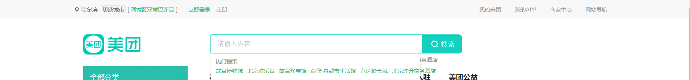
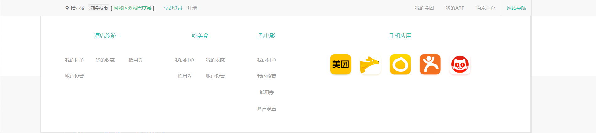
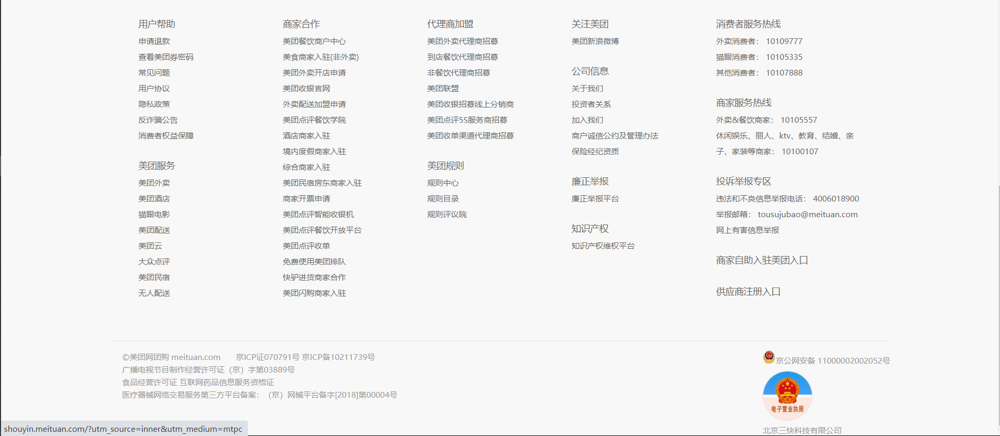
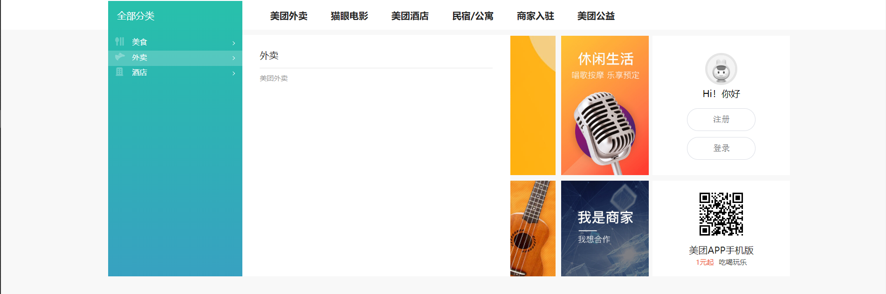
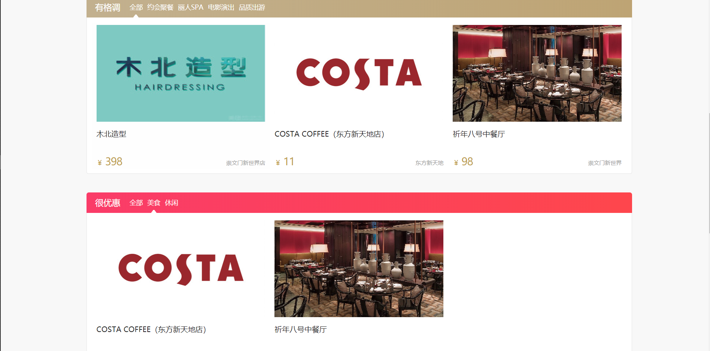
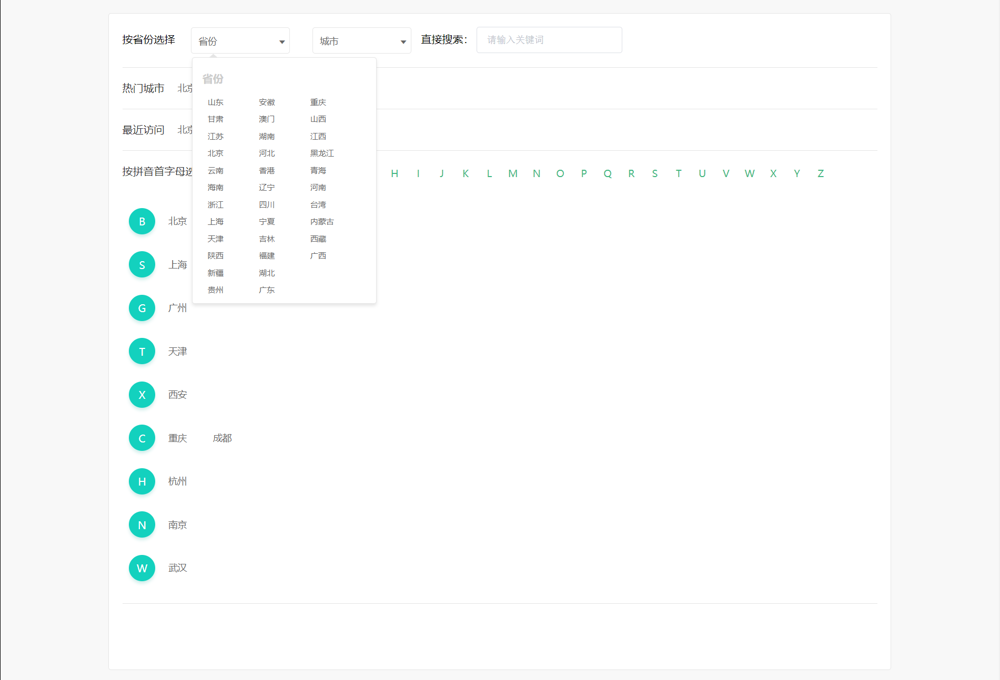
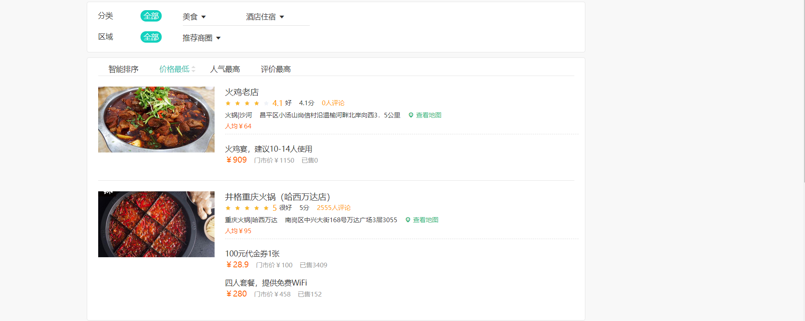
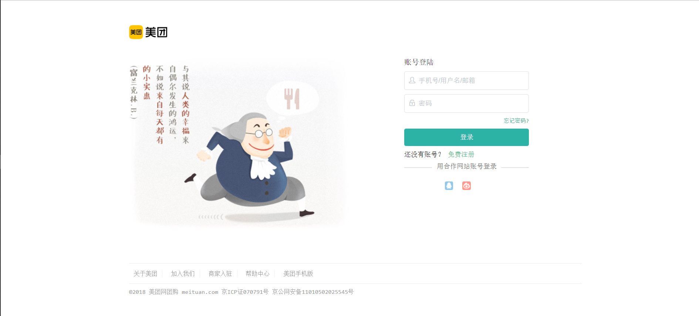
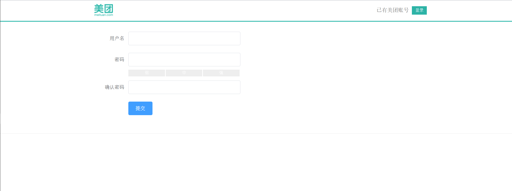
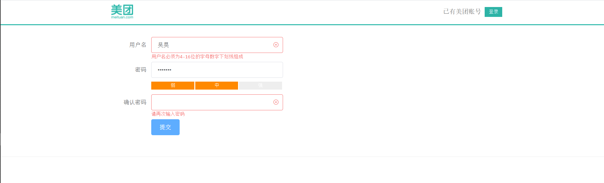

一、效果展示
1.1 默认模板
头部header

导航栏

尾部footer

1.2 首页
首页1

首页2

1.3 切换城市页面

1.4 产品列表页面

1.5 登录页面

1.6 注册页面


二、项目流程分析
2.1 布局
首先整个项目有两个模板，默认模板default.vue 以及空白模板blank.vue ，模板是布局，所以放到layout文件夹下
默认模板default.vue
用elementUI将页面划分成header、main、footer，用了vue-router，将配置文件index.js单独放到router文件夹中，设置根路径是’/‘，设置命名路由，路由的重定向(重定向为子路由Index)
header、footer：是两个组件my-header、my-footer
main：给父级路由设置三个子路由，分别是首页Index、产品列表goodsList、改变城市ChangeCity，子路由的内容应该在父路由上展示，所以在父路由的main中设置
<router-view></router-view>
- 空白模板blank.vue
- 是用来展示登录注册页面的，也用了vue-router，根路径’/blank’，用了命名路由，子路由是’login’、’register’，所以在父级路由上设置
<router-view></router-view>
- 每个路由组件都是一个页面，所以将首页Index、产品列表goodsList、改变城市ChangeCity、登录login、注册register五个子路由组件都放在page文件夹 下
2.2 路由子组件
2.2.1 首页Index
- 用了elementUI的
<el-row></el-row>布局方式，将首页Index分为三行，第一行包含了组件<m-menu/> <m-life/>，第二行和第三行实现了<content/>组件的复用，
m-menu组件
- 菜单部分是一个dt dd列表，内容部分是一个template标签
2.2.2 产品列表goodsList
- 用了elementUI的
<el-row></el-row>布局方式，包含三个组件，<crumbs/>，<categroy/>，<list/>
2.2.3 改变城市ChangeCity
- 分四行，包含两个组件
<provience/> <categroy/>
2.2.4 登录login
- 表单用了elementUI的输入框，
2.2.5 注册register
- 与登录页面类似